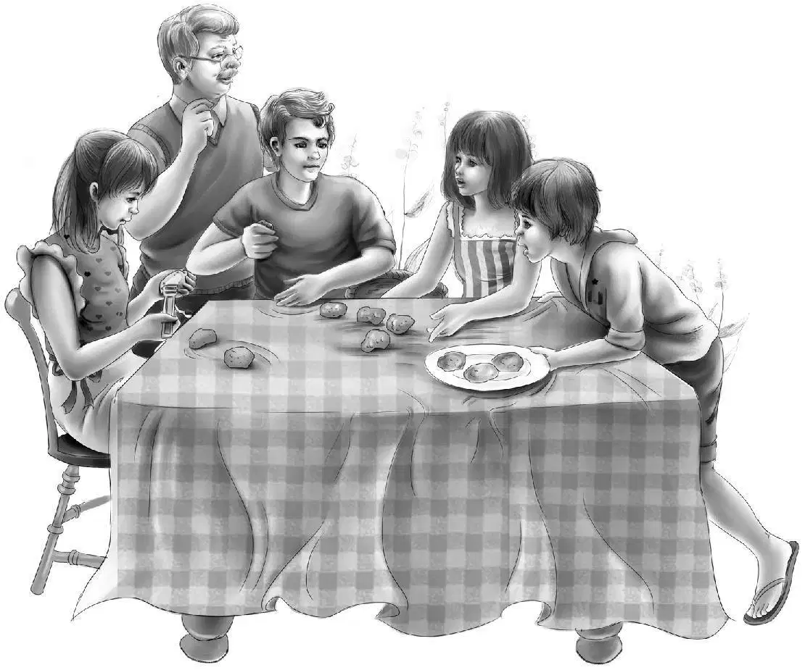
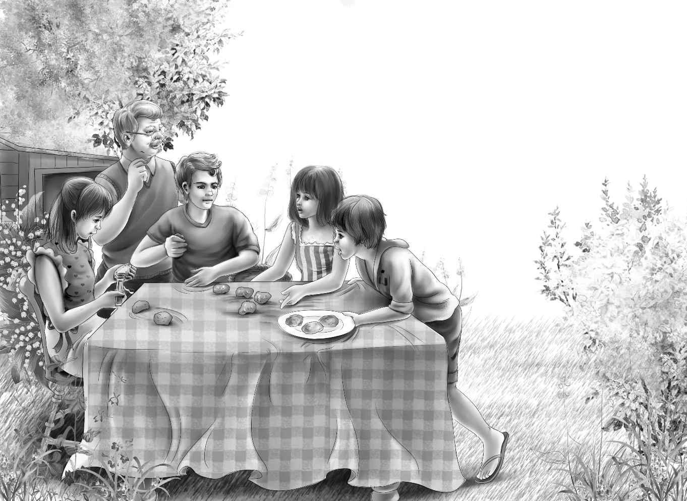
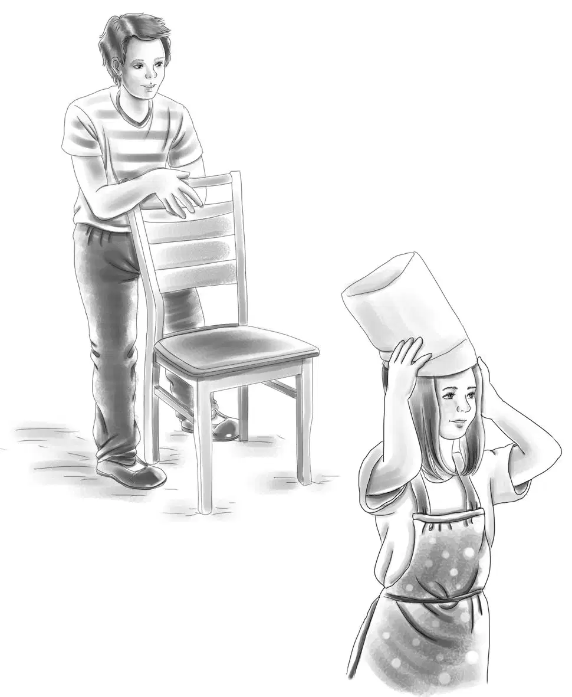
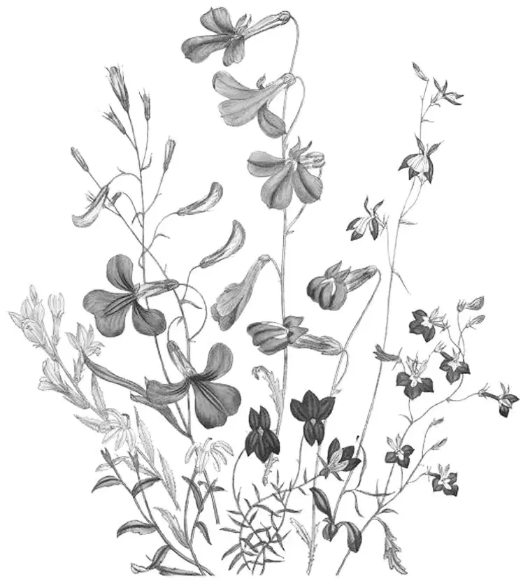

Henry went to the store to get the paper.He nearly bumped into the Cook boy coming out.The angry look on his face kept Henry from even trying to say hello.
"What's up now?" Henry wondered.Then he forgot about the boy because a sign on the store door said:
Henry said to Mr.Hall,"What's this supper on the twenty-fifth?"
Mr.Hall sat down and said,"Oh,every July this village has a chowder supper outdoors.Everybody in town comes.We have chowder and baked beans,hot rolls and coffee,pies and cakes.It costs one dollar."
"It sounds good," said Henry."Can anybody come?"
"Oh,yes.We want all the money we can get.We are trying to put in street lights.This year I think we will do it.All the tickets will be sold in one day.Everybody wants to come."
"I had better buy five tickets now," said Henry."My family will all love to come."
"Here you are," said Mr.Hall.He gave Henry five tickets."I'll tell you something else,too.You'll be surprised.Guess who makes the chowder and coffee and baked beans? Larry Cook! You see he isn't all bad.He does this every year.He loves to cook."
"Imagine that,"said Henry."I wouldn't think it."
"No,that Larry Cook is a surprise in many ways."
"Well,so he is," said Henry,thinking."I met him as I came into the store.He seemed crosser than ever."
"Want to know why?" asked Mr.Hall."Every year two summer people come up and help him.This year they sent word they can't come.That's why Larry is crosser than ever.He can't do this alone with such a big crowd.Everybody else is busy making pies."
"I wonder if we could help him?" said Henry."We would do just as he said.Maybe that would cheer him up."
"I'm sure it would.Your family would be a big help."
Henry went home with the tickets and the paper and the news.Everyone wanted to help Larry.
"I think Mr.Hall will tell him what I said," said Henry."But if we meet him,we'll tell him,too."
"I heard something new about Larry's father," said Benny."He is night watchman sometimes at the shipyard.So off and on he is busy all night.Maybe that's why he doesn't know his boat is gone."
Later that day the Aldens walked over to the dock.They met Larry.He went by them with a gruff hello.
Benny said,"Wait a minute,Larry.Would you like some help with your supper? We can peel onions and potatoes,and we all know how to get clams out of the shells."
"Do you?" asked Larry.He almost smiled."There will sure be a lot of clams.I can't do it alone."
"Then we can help?" asked Benny.
"Yes,I'd be glad of your help," said Larry.
"Grandfather will help,too," said Jessie."He is fine at getting out clams."
"Well,well!" said Larry."I never thought Mr.Alden would be working for me,that's sure.You come around at nine Saturday morning,and we'll all get to work."
When Saturday came,the five Aldens went to meet Larry behind the store.There was a big field there,with a place for cooking and a tent for shelter.Other men had set up the long tables and chairs.

Larry had five chairs ready.The Aldens sat down and started to peel potatoes.
Larry said,"We'll get through quicker this year with six workers.I always had three."
When the onions came around,Larry had big pails of water."Peel the onions under water," he said."If you don't,you will cry and not be able to see."
It was a fine idea,for there were many onions.
Next Larry and the Aldens got the clams out of their shells.They had piles and piles of clams.
"You should see this crowd eat," said Larry."We have to have baked beans,too.Chowder isn't enough."
The beans were all baked ahead of time.
Henry said,"Too bad we can't get more food from the ocean." But if Larry heard him,he kept quiet.
At five o'clock the people began to come.It certainly looked as if everyone in town was there.Jessie had made paper caps for the family,to show that they were waiters.Other people helped,too.
Larry was a different boy.He smiled at everyone.He could hardly believe it when he saw Grandfather waiting on table in a paper hat.
One tall man was a summer visitor,just going through the town.He called Benny and said,"Sonny,ask the cook how he makes baked beans."
"He won't tell," said Benny."A lot of people want to know.He always says,‘That is my secret.' The chowder is secret,too."
After the stranger had finished supper he went out to the kitchen tent to talk to Larry.But he did not learn how to bake the beans.
Larry was very polite and was willing to talk.But he said just what Benny had said—"That is my secret,sir,"

"They say you like to cook," said the stranger.
"Oh,yes.Ever since I was fourteen I have cooked this supper.I love to cook.I like to put things together to see what will happen."
"Oh,do you? Do you go to college?"
"No." said Larry.He scowled.
The man saw the scowl,so he said goodbye to Larry and went down to his car.Nobody else noticed him very much,And nobody knew his name until some time later,Then they were really surprised.
